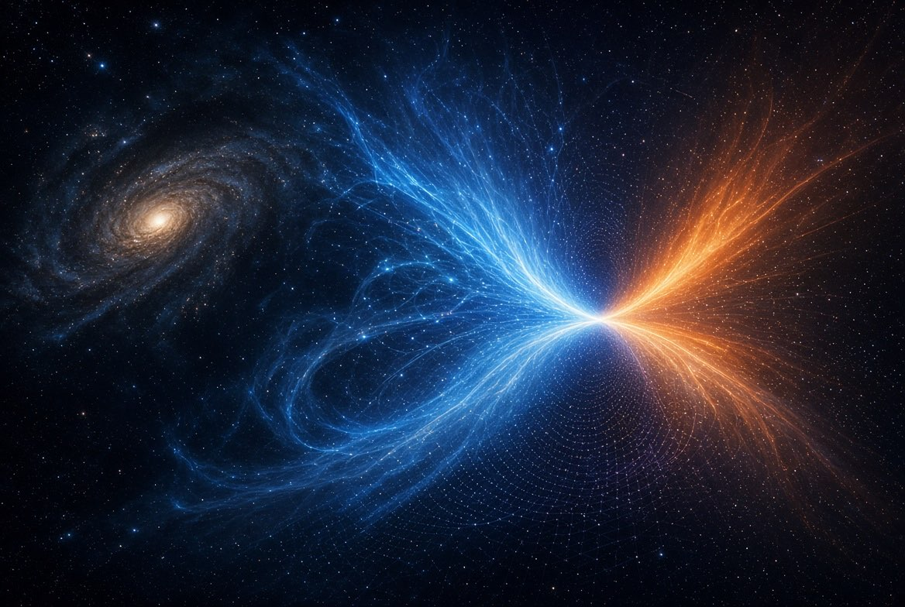
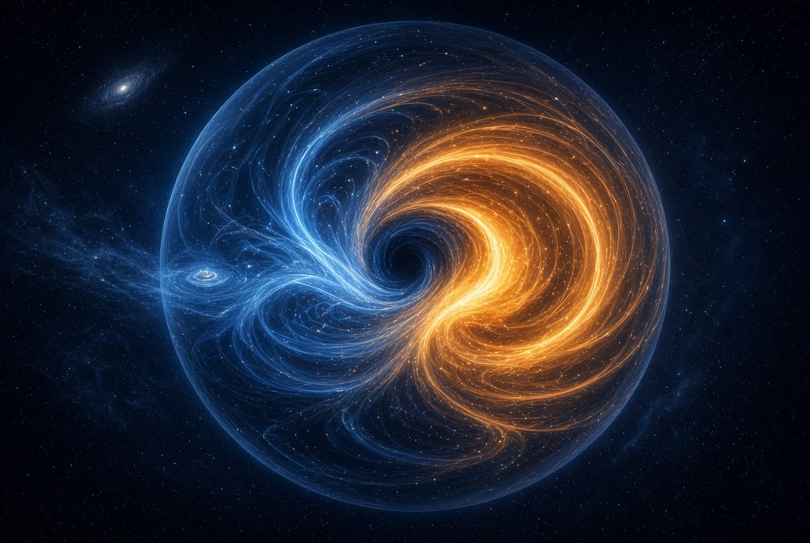
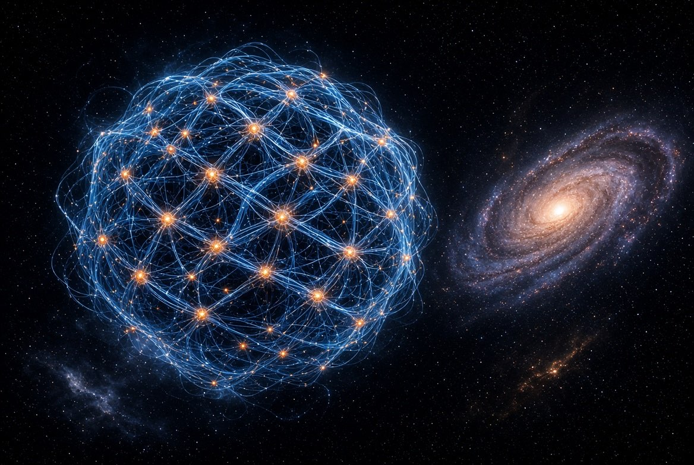
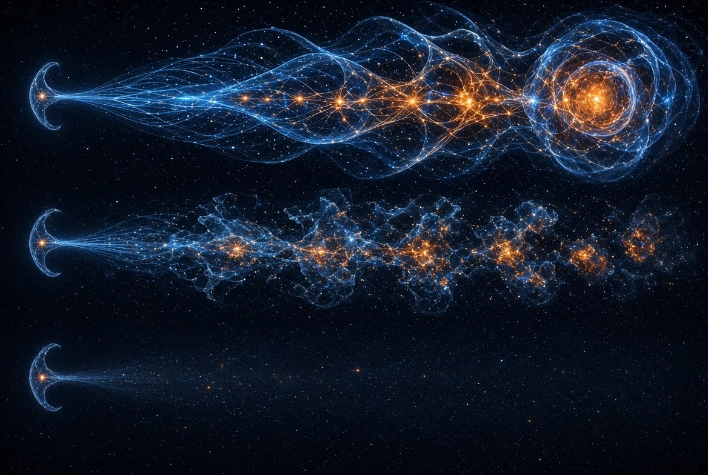

IntroducciónPor qué esta pregunta, y por qué no hace falta un acelerador de partículas
La física describe muy bien cómo funciona el universo una vez que ya existe. Lo que no responde es la pregunta anterior: ¿por qué hay algo en vez de nada?
Hay una respuesta clásica, y es más vieja que la física. Si en el origen todo hubiera sido perfectamente simétrico —tanta materia como antimateria, exactamente idénticas— todo se habría cancelado con todo. No quedaría nada. Ni siquiera vacío: no habría nadie para llamarlo vacío.
Pero quedó algo. Nosotros somos parte de ese algo. Entonces hubo una asimetría. No hace falta que fuera grande: bastaba con que no fuera cero.
Esa idea no es nuestra. La física de partículas la tiene planteada desde hace décadas, y hasta le puso nombre: para que hoy exista materia, tuvo que romperse una simetría en el origen. Lo que se mide en los laboratorios —las llamadas violaciones CP— es exactamente eso, y la propia física reconoce que lo medido no alcanza para explicar cuánta materia hay. El problema está abierto.
Nuestra pregunta es un paso más atrás, y es más simple:
Una diferencia mínima, ¿puede sobrevivir? ¿Y si sobrevive, alcanza para que aparezcan el tiempo, la distancia y la forma?

Para eso no hace falta un acelerador. Un acelerador sirve para estudiar partículas que ya existen. Nosotros preguntamos por algo previo: qué reglas mínimas permiten que algo persista y se organice, antes de que haya partículas de las que hablar.
Así que en vez de energía, usamos relaciones. Construimos universos de juguete hechos sólo de puntos y vínculos entre puntos —nada más— y miramos qué aparece solo.
UnoLa pregunta exacta
El experimento empezó con una pregunta formulada de una sola vez, y no cambió nunca:
De una asimetría ínfima de temperatura en un todo infinito —en el sentido de que es el todo—, ¿hay persistencia si ese todo se expande a una velocidad mayor a la de la luz?

Vale la pena desarmarla, porque cada palabra hace trabajo.
«Un todo infinito, en el sentido de que es el todo.» No hay afuera. Nada puede enfriarse hacia otro lado, porque no hay otro lado. Todo lo que pase, pasa adentro.
«Una asimetría ínfima.» Una diferencia mínima. Un lugar apenas distinto de otro.
«Que se expande más rápido que la luz.» Acá está la clave, y es menos exótica de lo que suena. Si dos regiones se separan más rápido de lo que puede viajar una señal entre ellas, dejan de poder hablarse. Y si dejan de hablarse, dejan de poder promediarse.
Porque ése es el problema de una diferencia mínima en un todo cerrado: normalmente se borra. Las cosas se mezclan, se promedian, se emparejan. Es lo que hace un vaso de agua caliente en una pieza fría.
La hipótesis es que la expansión salva la diferencia.
No porque la haga más grande, sino porque desconecta las partes antes de que alcancen a promediarse. La diferencia no se borra: se congela.
Es la carrera entre dos velocidades: la que borra y la que separa. Si gana la que separa, algo queda.
DosCómo se puso a prueba
En dos etapas, y la distinción entre ellas importa más que cualquier resultado.
Primera etapa — universos de pura relación
Construimos redes: puntos conectados entre sí, con reglas simples de cómo se conectan y cómo cambian. Sin física adentro. Sin masa, sin energía, sin gravedad. Sólo relación.
Y miramos si aparecen solas cuatro cosas que damos por sentadas:
- Distancia — que se pueda decir que un punto está lejos de otro
- Dimensión — que el conjunto se comporte como un espacio de dos, tres o más dimensiones
- Dirección — que exista algo parecido a un norte
- Tiempo — que haya un antes y un después que no se puedan invertir

Segunda etapa — agregar la física
Después le agregamos física de verdad: gravedad newtoniana, fuerzas nucleares, electromagnetismo. Y un simulador astrofísico profesional —Phantom, el mismo que usan los astrónomos— para ver si sobre esas estructuras se podía encender una estrella.
Lo que sale en una red no prueba nada sobre el mundo físico, y lo que sale en física no prueba nada sobre la red. Son dos preguntas distintas. Confundirlas fue el error más caro del proyecto, y volveremos sobre eso.
TresLo que encontramos
La diferencia sobrevive, pero sólo si su estructura sobrevive
Éste es el resultado central, y es más específico de lo que esperábamos.
Comparamos tres universos que arrancan exactamente iguales —la misma asimetría inicial, verificada punto por punto en las noventa configuraciones— y sólo se diferencian en lo que pasa después:
| Universo | Qué tiene | Qué pasa |
|---|---|---|
| Real | Las relaciones se mantienen | Persiste 10 de 10 |
| Barajado | Las mismas relaciones, reordenadas a cada paso | Persiste 3 de 10 |
| Apagado | Sin relaciones | Nunca persiste |

Y en las que persisten, el universo real crece 21 veces más rápido que el barajado.
Lo interesante es el brazo del medio. Tiene la misma asimetría y la misma cantidad de acoplamiento. Lo único que le falta es que sus relaciones sean las mismas de un momento al otro.
En criollo: una conversación donde te cambian de interlocutor cada segundo tiene la misma cantidad de conversación que una donde hablás siempre con la misma gente. Pero en una se construye algo y en la otra no.
No basta con que haya una diferencia. Hace falta que la diferencia tenga con qué sostenerse.
Una asimetría del 2% se convierte en 51%
En un modelo de aniquilación —donde cada elemento tiene su opuesto y ambos se cancelan al encontrarse— sembramos una asimetría del 2%.
Sobrevivió la mitad de todo, como corresponde. Pero entre lo que sobrevivió, esa asimetría del 2% se había convertido en 51%. Se amplificó veinticinco veces sola.
Y el control es la parte que importa: cuando hacemos que todos los elementos sean idénticos —sin ninguna diferencia— sobrevive el 100%. Todo. Uniforme, y sin ninguna estructura.
El universo simétrico no queda vacío. Queda lleno y muerto.
Todo sobrevive y no pasa nada, porque no hay ninguna diferencia que pueda ir a ningún lado.
El número que podía moverse y no se movió
De todo el proyecto, el resultado más duro es también el menos vistoso.
Cuando dos orientaciones opuestas se cancelan, sobrevive exactamente la mitad. Un factor de ½ limpio.
Podría ser una casualidad de cómo montamos el experimento. Así que lo pusimos a prueba de la forma más exigente que se nos ocurrió: barrimos las condiciones en un rango de seis veces, con tres tamaños de sistema y treinta repeticiones cada uno. Mil ochenta simulaciones.
Si el ½ fuera un artefacto nuestro, se habría movido.
Cambió 0,0000.
Y el detalle que lo vuelve serio: la regla para decidir estaba escrita antes de correr, y estaba diseñada para poder concluir «esto es un número que pusimos nosotros sin darnos cuenta». Podía salir mal. No salió.
Distancia, dimensión y dirección son tres cosas distintas
Damos por sentado que el espacio viene en un solo paquete. Nuestros universos de juguete muestran que no.
La distancia aparece. Cuando obligamos a que las conexiones sean locales, se forma un tejido donde tiene sentido decir que un punto está lejos de otro. El tejido es cuatro veces más entramado que su versión al azar.
La dimensión no viene incluida. Que haya distancia no hace que el conjunto sea tridimensional. De hecho nunca lo fue: medimos que estaba trece veces del lado equivocado de lo que un espacio de verdad exigiría.
La dirección no aparece nunca. Éste es el resultado mejor sostenido de todo el proyecto. Lo intentamos por tres caminos independientes —uno clásico, uno cuántico y uno basado en memoria de las conexiones— con tres formas distintas de medir. Los tres dan lo mismo: hay lejos, no hay hacia dónde.
La imagen es un ovillo de lana. Dos puntos del hilo pueden estar muy lejos siguiendo el hilo. Pero el ovillo no tiene norte.
π no es una verdad eterna: es la huella de una geometría
Éste es el resultado que más sorprende a quien lo escucha por primera vez.
π —la relación entre el contorno de un círculo y su diámetro— parece una de esas verdades que existirían aunque no existiera el universo. Nuestros modelos dicen otra cosa.
Medimos esa misma relación dentro de mundos con geometrías distintas:
| Mundo | Su π |
|---|---|
| Cuadriculado | 2,0 |
| Triangular | 3,0 |
| Hexagonal | 1,5 |
Constante dentro de cada mundo. Distinto entre mundos.
O sea: π no es una ley previa que el universo obedece. Es una consecuencia de la geometría que le tocó cuajar.
π no es metafísico: es simplemente la relación que sobrevivió al filtro.
Esta medida sólo da un valor constante en mundos de dos dimensiones. Una retícula cúbica perfecta —geometría impecable, tres dimensiones— también daría un número que crece. Así que la mitad del resultado que decía «π es indefinido donde no cuajó geometría» no se sostiene: el instrumento sólo veía dimensión dos. La mitad que sí se sostiene, y es la importante, es que π cambia con la geometría.
Hay flecha del tiempo, pero no donde la buscábamos
Acá hay una distinción que se nos escapó durante semanas y que vale la pena contar bien, porque es exactamente lo que pasa en la física real.
A escala grande, el tiempo tiene dirección. Lo medimos: el volumen de posibilidades del sistema se contrae de forma constante y medible, paso a paso. Las opciones disminuyen. La historia acumula restricciones y no las devuelve. Eso es una flecha del tiempo, y está.
A escala microscópica, no la hay. Cuando fuimos a mirar las ecuaciones de nuestro modelo, descubrimos que son reversibles: se puede recorrer la película hacia atrás y volver exactamente al punto de partida. Lo verificamos numéricamente, con un error de quince decimales.
Esto no es un fallo. Es lo mismo que ocurre en la física conocida. Las leyes fundamentales no distinguen pasado de futuro; la irreversibilidad aparece cuando hay muchísimos elementos y el desorden gana por pura estadística. Un vaso que se rompe no viola ninguna ley al romperse: sólo hay muchas más maneras de estar roto que entero.
Nuestro modelo reproduce esa misma estructura sin que se la hayamos puesto.
Se organiza de cerca, no de lejos
Las redes forman grumos, agrupaciones, vecindarios. Organización local: sí.
Pero no aparece organización de gran escala —un eje, un flujo general, una jerarquía. Y esto lo verificamos con un cuidado especial, porque teníamos cuatro formas distintas de medirlo y quisimos saber si servían.
De las cuatro, sólo una pasó la prueba. Le dimos a cada medidor mundos donde el orden global existe de verdad —una cuadrícula, un cubo, un anillo— para ver si lo detectaba. Tres fallaron: uno declaraba desordenado a un cristal perfecto de tres dimensiones, otro sólo reconocía un tipo muy particular de orden, y el tercero, por cómo estaba construido, sólo podía ver mundos pequeños.
Con el único medidor sano, el resultado se sostiene. Pero queda algo importante nombrado: hay tipos de orden global que nunca miramos, porque ninguno de los cuatro medidores los mira.
La estrella se enciende, y la gravedad hace el trabajo
En la segunda etapa llevamos las estructuras a Phantom, un simulador astrofísico de verdad, para ver si colapsaban en algo parecido a una estrella.
Se encienden. Se forman concentraciones de masa que crecen absorbiendo material a su alrededor.
Y hay un detalle que importa mucho, porque responde a una objeción obvia —¿no estará todo ya decidido en las condiciones iniciales? Medimos la densidad de las condiciones de partida contra el umbral real que Phantom exige para encender, y el resultado fue nítido: ni una sola partícula, en veinticuatro simulaciones, llegaba a ese umbral al empezar.
Todo el encendido lo pone la gravedad.
La estructura inicial decide cuánta materia queda en montoncitos.
Sólo la dinámica decide cuánta queda lo bastante apretada como para encenderse.
CuatroLo que no logramos, dicho sin adornos
El puente a la materia no se cruzó
La segunda etapa tenía un objetivo concreto: agregar las cuatro fuerzas fundamentales y ver si aparecía un espacio tridimensional con partículas dentro. No apareció.
Y la razón principal no es que la idea fallara: es que el motor que simulaba las fuerzas estaba mal construido. Cuando lo auditamos en detalle encontramos que el conteo de partículas era una división fija que no cambiaba ni apagando todas las fuerzas a la vez; que una proporción que celebrábamos como resultado la producía un número escrito a mano; que la dimensión que «emergía» era el dato de entrada copiado a la salida; y que una de las cuatro fuerzas directamente no estaba haciendo nada.
De todo ese motor sobreviven exactamente dos resultados, y son limpios: apagar el electromagnetismo deja cero hidrógeno, y apagar la fuerza nuclear fuerte deja cero helio.
Es poco. Pero es honesto, y es lo que hay.
Lo que no se puede probar acá, y no por falta de esfuerzo
Varias afirmaciones de la teoría hablan de un sistema y su entorno: cómo se acopla con lo de afuera, cuánta libertad tiene, dónde está su frontera. Nuestros universos de juguete no tienen afuera. Todo se relaciona con todo dentro del mismo saco.
Lo comprobamos con un número: de las 254 formas posibles de partir uno de estos sistemas en «adentro» y «afuera», en varias el acoplamiento entre las dos partes da exactamente cero y no pasa absolutamente nada. La frontera es arbitraria porque no hay ninguna real.
Eso no es una deuda: es sustrato equivocado. Esas preguntas necesitan otro tipo de modelo, y ese modelo existe en otra rama del proyecto.
CincoLa parte incómoda, que también es un resultado
Un experimento honesto tiene que contar en qué se equivocó. En este caso las equivocaciones resultaron ser el hallazgo más transferible.
Ocho veces medimos algo que no era lo que su nombre decía.
- Lo que llamábamos «gravedad» en la primera etapa era, en el código, el número de conexiones de cada punto. No masa: popularidad.
- Un indicador de «persistencia» resultó ser, al revisarlo, la hora a la que había nacido cada objeto — porque en ese modelo nada podía morir, y entonces «cuánto duró» era sólo «cuándo empezó».
- Tres indicadores distintos de «cuánta diferencia hay» resultaron ser, los tres, la masa total medida de otra forma.
- Un control que debía representar «el azar» resultaba ser el mismo universo con los puntos renumerados.
¿Cómo se destaparon? Con una sola pregunta, y es gratis:
¿Este número podía salir distinto?
Si la respuesta es no —si el resultado estaba garantizado por cómo está escrito el programa— entonces no hay experimento. Hay una definición ejecutada.
Y hay un detalle que nos dejó pensando. En julio, este mismo equipo escribió una lista de seis preguntas de control para no engañarse. Cuando en agosto auditamos todo el proyecto, encontramos ocho errores de este tipo. Los ocho estaban previstos por esas seis preguntas.
No faltó método. El método estaba escrito y se dejó de usar.
Lo que sobrevivió, sobrevivió porque alguien intentó tumbarlo: el ½ que podía moverse y no se movió, la dirección que se buscó por tres caminos, el techo que resultó no ser energético, el universo barajado que podía sostenerse y no se sostuvo.
SeisEntonces, ¿se probó la teoría?
No. Y decirlo así, sin matizar, es parte del resultado.
Pero tampoco es que no se haya probado nada, y esa distinción es la que importa.
Lo que quedó establecido en el dominio de las relaciones puras: la diferencia mínima persiste si su estructura persiste · la asimetría se amplifica sola · el ½ de la cancelación · distancia, dimensión y dirección son tres cosas separables · la dirección no emerge de la relación pura · π depende de la geometría que cuajó · el volumen de posibilidades se contrae con el tiempo · hay un rango de estabilidad fuera del cual todo colapsa.
Lo que no se cruzó: el puente hacia la materia, las partículas y el espacio tridimensional.
Y la distinción de fondo, puesta por escrito en julio y que sigue siendo correcta:
Confundir el límite de un instrumento con la falsación de una teoría es un error de alcance.
Que un microscopio no alcance a ver un átomo no demuestra que los átomos no existan. Demuestra que hace falta otro microscopio.
Hay una cosa más, y es la que sostiene todo lo demás. La afirmación de fondo —sin una diferencia mínima no habría nada— no es una hipótesis a la espera de confirmación. No se puede refutar, y eso no es un defecto: es lo que es. Para refutarla habría que exhibir un universo perfectamente simétrico, y en un universo perfectamente simétrico no hay nadie observando ni nada que observar.
Lo intentamos igual, tres veces, con tres instrumentos independientes. Las tres el programa devolvió no un resultado sino un atajo: una división por cero, una regla de parada, un modelo que simplemente no tenía nada adentro. La afirmación no se prueba: se constata. Es el suelo sobre el que se para el experimento, no uno de sus resultados.
Lo que sí se puede poner a prueba —y se puso— es lo que viene después: si esa diferencia se sostiene, si se amplifica, si basta para que algo se organice. Eso podía fallar. No falló.
SietePor qué hace falta la simulación
Todo lo anterior ocupa cientos de documentos, decenas de miles de simulaciones y un vocabulario que no le sirve a nadie que no haya estado adentro.
Y la pregunta original —la que arrancó todo esto— se puede ver. No hay que creerla: se puede mirar.
Es una carrera entre dos velocidades:
Sin expansión suficiente, las partes del universo alcanzan a hablarse, se promedian, y la diferencia inicial se borra. Queda todo igual a todo. Lleno, uniforme, y sin nada que pueda pasar.
Con expansión que gana, las partes se desconectan antes de alcanzar a promediarse. La diferencia se congela, y sobre ella empieza a construirse todo lo demás: grumos, tejido, distancia, estructura.
Dos ventanas al lado de la otra, la misma semilla mínima en las dos, una sola perilla —cuán rápido se expande— y el espectador viendo con sus propios ojos dónde está la frontera entre un universo que se apaga y uno que arranca.
Eso es la simulación.
No es una ilustración decorativa del experimento: es el experimento, en su forma más honesta. Es la única parte de todo esto que no necesita que nadie confíe en nuestros números.